Easygenerator
Head of Insights
Product Analytics Case Study
Ankush Wadhwa
Business Case Interview — 2025
My Approach
How I analyzed 2.9M events across 63K authors
Data Sources
authors.csv — 63,279 user records (country, plan, org, registration date)
events (292 CSVs) — 2,913,500 product events from May 2025 (action, category, course, user,
content type)
Analysis Steps
1. Profile schemas & data quality checks
2. Compute engagement, segmentation, & funnel metrics
3. Feature adoption analysis (AI, SCORM, collaboration, translation)
4. Geographic & temporal pattern discovery
Raw Data Exploration
Sample Dataset

Schema Inspection

Unique Active Users (MAU)

Plan Distribution

Top
Events by Volume

Date Range of Events

Part 1
Exploratory Data Analysis
Insights from product usage data that help answer product and business questions
Platform Scale & Health
Key metrics for May 2025
63,279
Registered Authors
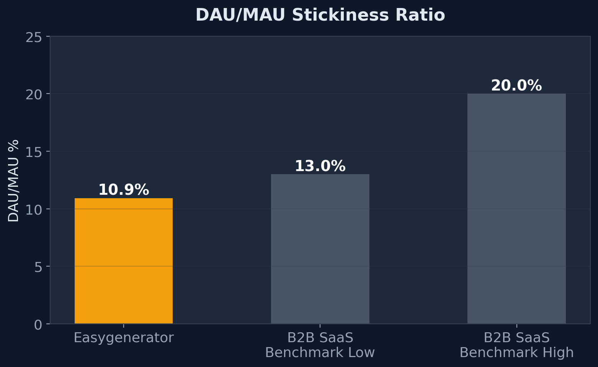
Observation
DAU/MAU of 10.9% sits at the lower end of the B2B SaaS benchmark range (10–20%,
per
Mixpanel
and
Statsig benchmarks).
This is expected for periodic-use authoring tools — authors create courses weekly/monthly, not daily — but
signals room for improvement through engagement loops.
Concern
Only
23.4% of authors were active in May. 48,489 authors (76.6%) had zero events — a
massive re-engagement opportunity.
The "Missing Middle" Problem
70% of active users are light users — the middle tiers are underdeveloped
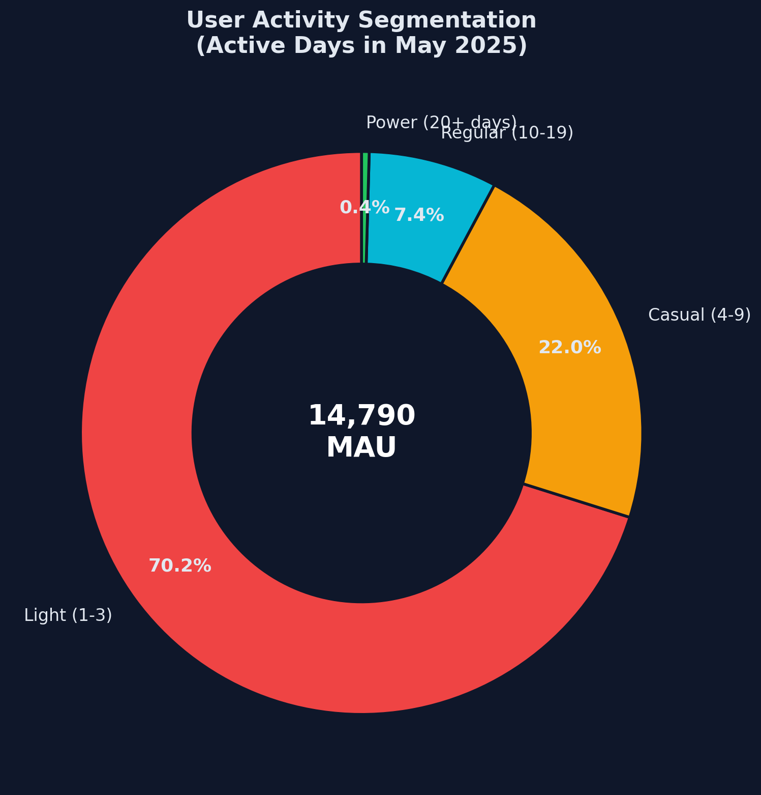
Key Finding
70.2% of active users only use the platform 1-3 days/month. Just 0.4% are power users.
What This Means
Most users create content sporadically. The gap between Light (1-3 days) and Casual (4-9 days) is where
intervention can drive the most value.
Recommendation
Build engagement loops: incomplete course nudges, collaborative review invitations, weekly content
performance digests to activate light users.
Engagement by Plan Tier
Team & Pro users are most engaged per-capita; Enterprise has massive seat
underutilization
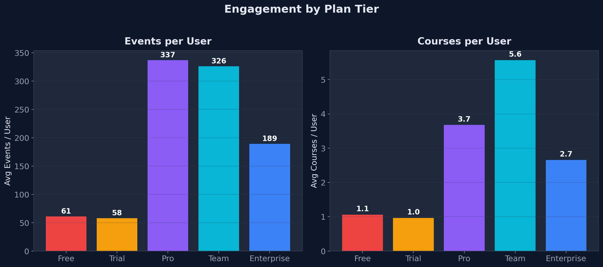
Team Plan Outperforms
326 events/user, 5.6 courses/user — the most engaged cohort. Active L&D teams collaborating
heavily.
Enterprise Seat Utilization
Enterprise drives 57% of total events but only
189 events/user. Many underutilized seats =
expansion opportunity.
Trial ≈ Free
Trial (58 events) ≈ Free (61 events).
The trial isn't demonstrating paid value. Funnel
redesign needed.
Active vs Dormant Users
76.6% of registered authors had zero activity in May — a re-engagement opportunity
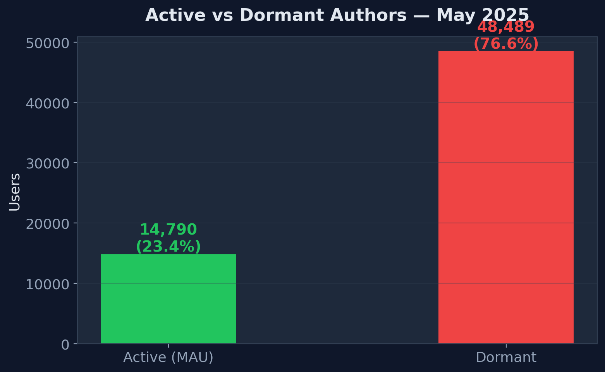
The Gap
48,489 authors are dormant. Segmenting by recency and plan tier would enable targeted
win-back campaigns.
User Journey Funnel
From sign-in to value delivery — where users drop off
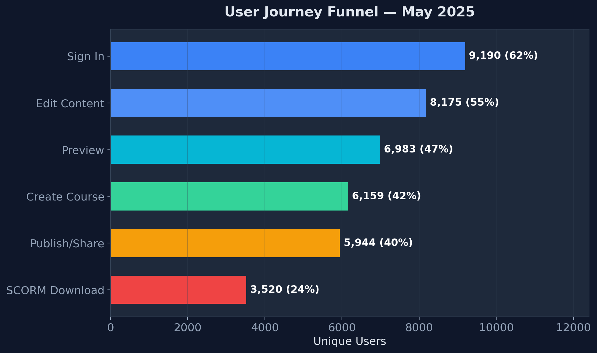
Sign In → Edit
11% drop — some users sign in for admin/review tasks only
Preview → Publish
~1,039 users preview but never publish. These "almost there" users could be nudged with
in-app prompts.
Publish → SCORM
41% drop — many share via private link rather than SCORM. Different distribution patterns.
Feature Adoption
Collaboration is the most adopted advanced feature; AI shows strong growth
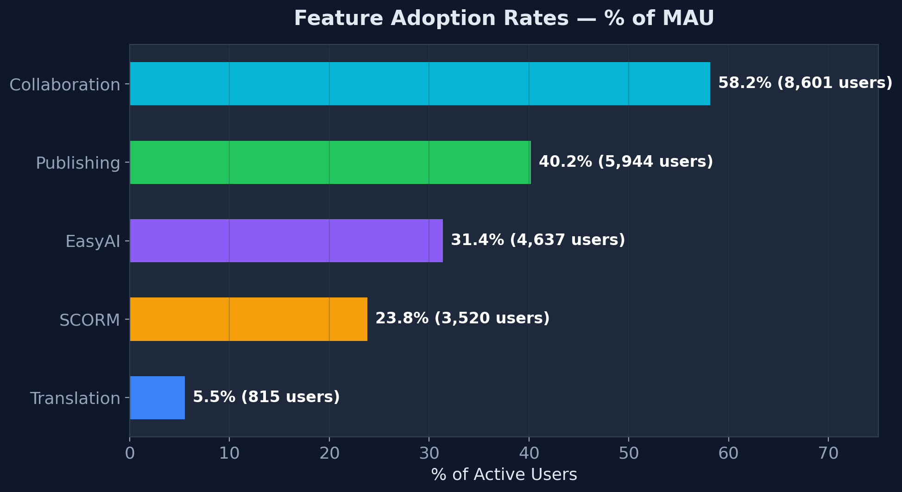
Collaboration = Stickiest
58% of MAU use collaboration features. Co-authoring correlates with deeper engagement — use
as account health indicator.
AI Adoption
31.4% of MAU use EasyAI — primarily Enterprise (57%) and Team (28%). Position AI as
conversion driver for Free → Paid.
Translation Baseline
815 users (5.5%) use translation — this is the MLC pre-launch baseline. Critical for Part
2.
Temporal Patterns
Peak activity mid-week, European business hours (UTC), negligible weekends
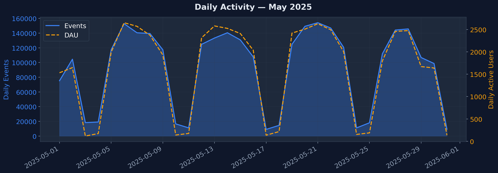
Peak Days
Tuesday–Thursday see ~500K+ events each, while weekends drop to <50K — a 10×
difference. Users treat Easygenerator as a work tool.
Trend
A visible dip during the week of May 12–16 may indicate a public holiday in key European markets.
Consistent drop-offs on Fridays suggest half-day patterns.
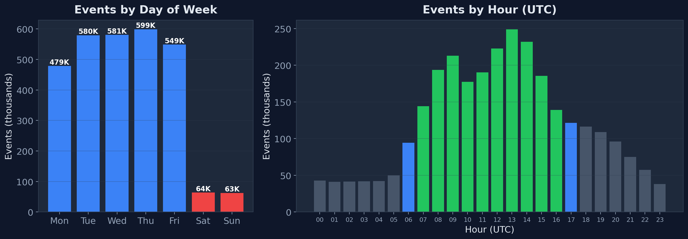
Peak Hours (UTC)
Activity concentrates between
08:00–16:00 UTC, aligning with European business hours. The
user base is predominantly Europe-based.
Implication
Feature releases, maintenance, and email campaigns should be scheduled around European business hours for
maximum impact.
Weekly Retention
Week-over-week retention declining from 60.4% to 47.7% — warrants monitoring
Declining Trend
Retention dropped from
60.4% → 47.7% across May. Roughly half of users active in any given
week don't return the following week.
What the Numbers Mean
60.4% (1,687 / 2,793) means of 2,793 users active in Week 18, only 1,687 returned in Week
19 — a 40% drop-off right at the start of the month.
Context
This may be seasonal or reflect the periodic nature of course authoring. Need 6-12 months of data to
separate structural vs. seasonal patterns.
Geographic Engagement & Content Depth
Non-English markets significantly more engaged; Text + Image blocks dominate
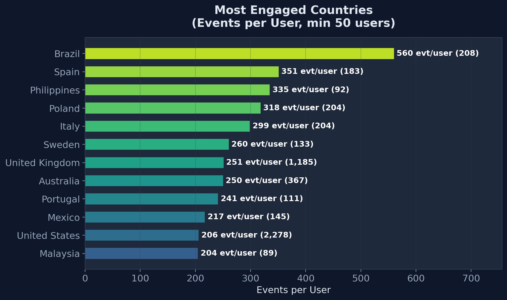
Non-English Markets Lead
Brazil (560 evt/user) is 2.7× more engaged than the US (206). Turkey (459), Chile (397),
and Mexico (367) also outperform significantly. These markets are strong candidates for MLC.
Implication
Non-English markets have a higher need for multilingual content. MLC adoption will likely be fastest in
LATAM and Southern Europe.
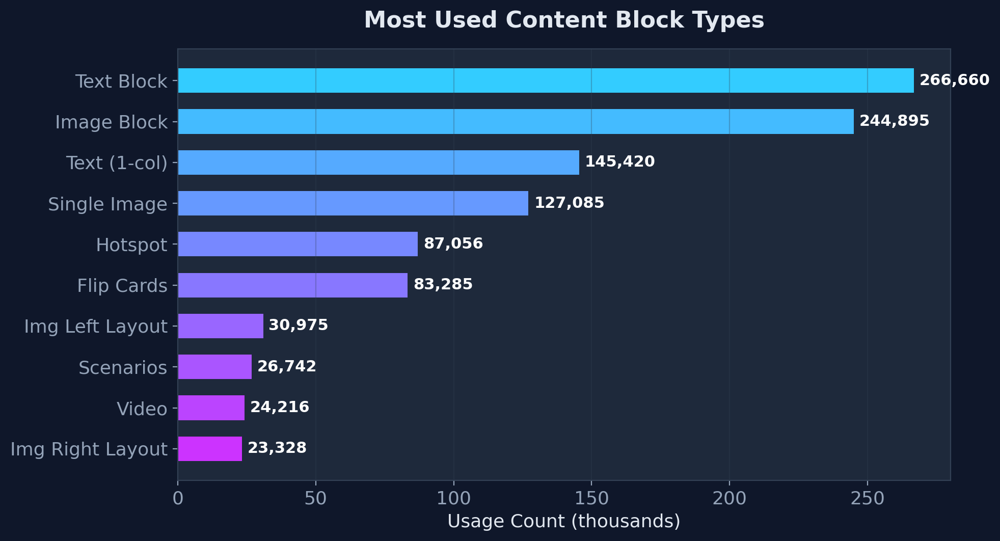
Content Mix
Text blocks and
Image blocks dominate usage. Interactive elements (Flip
Cards, Hotspots, Scenarios) are used but at much lower volumes — an opportunity for templates.
Course Creation Methods
AI-assisted creation is already the 2nd most popular method
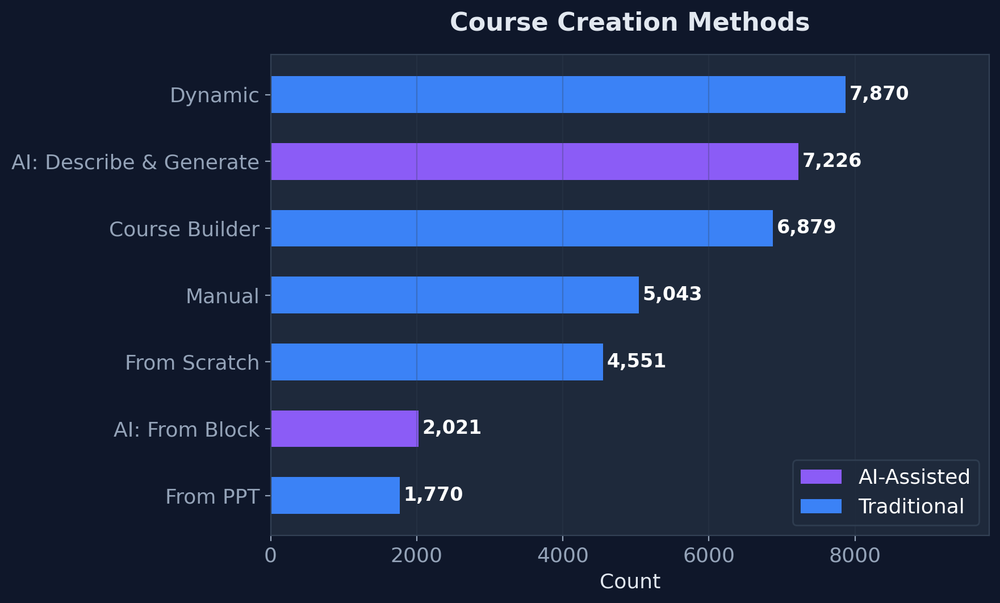
AI Traction
"Describe & Generate" (7,226) nearly matches Dynamic (7,870). AI is reshaping how courses
are built.
Template Underuse
Templates at
767 uses (not shown in chart — ranks below top 7 methods). Despite existing
organizational template features, adoption remains very low. Opportunity to promote templates as a
productivity multiplier alongside AI.
Strategic Priorities
Three immediate actions to drive engagement and conversion
🎯 1. Address the "Missing Middle"
Problem: 70% of active users are "Light" (1-3 days/month). The gap between Light and
Casual (4-9 days) is where we lose the most potential value.
Strategy: Build engagement loops — incomplete course nudges, collaborative review
invitations, weekly content performance digests. Target users who created but never published.
Expected Impact: Shift 15-20% of Light users to Casual within 6 months.
🎯 2. Fix the Trial → Paid Funnel
Problem: Trial users average only 58 events — nearly identical to Free (61). The trial
isn't proving paid-tier value.
Strategy: Redesign trial to guide users through the full Create → Collaborate → Publish
journey. Pre-populate templates, enable team features, and showcase AI capabilities.
Expected Impact: Increase trial-to-paid conversion by 25%.
🎯 3. Re-engage Dormant Authors
Problem: 48,489 authors (77%) had zero May activity. This is both a risk and a massive
re-engagement opportunity.
Strategy: Segment dormant users by recency and plan tier. Run targeted win-back campaigns:
"Your courses had X views" emails, new feature announcements, personalized AI course suggestions.
Expected Impact: Re-activate 10-15% of dormant users within 3 months.
Growth Opportunities & Measurement
Three growth levers and two measurement improvements
📈 4. AI as Conversion Driver
31% adoption with strong Enterprise skew. Position EasyAI in Free/Trial as a
value differentiator.
📈 5. Collaboration for Expansion
58% of active users collaborate. Build health scores around collaboration depth
per org for CSM retention.
📈 6. Non-English Market Potential
Brazil (560 evt/user) is 2.7× more engaged than US (206). These markets benefit
disproportionately from MLC.
🔍 7. Track Course Lifecycle
Add metrics for time-to-first-publish, publish-to-learner-completion, and course
iteration cycles.
🔍 8. Org Health Dashboards
Per-org metrics for active users, courses, publishing rates, and feature
adoption to enable CSM-driven retention.
Part 2
Data & Measurement Strategy
MLC (Multi-Language Courses) — Pre-launch baselines, success metrics, and experiment design
Current Translation Baseline
815 users already use translation features — this is our MLC "before" picture
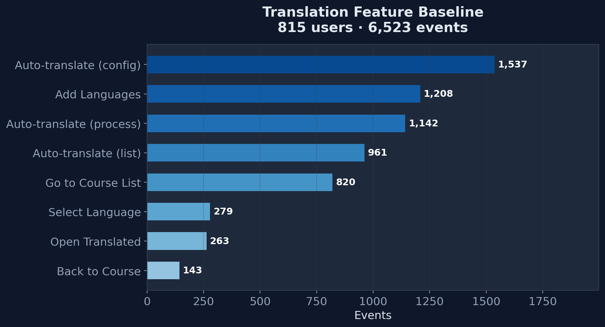
Current State
6,523 translation events from 815 users. Auto-translation dominates. XLIFF usage minimal
(67 exports, 64 imports) — confirms PRD finding.
Why This Matters
These 815 users are:
• Our best
beta candidates
• Our
baseline cohort for measuring MLC impact
• Proof of demand for the feature
Pre-Launch: Baselines to Establish
Before we launch, we need to measure what "before" looks like
| Metric |
Source |
Current Baseline |
| Translation feature users/month |
Events data |
815 users |
| Auto-translation events/month |
Events data |
6,523 events |
| XLIFF export/import volume |
Events data |
67 exports, 64 imports |
| Duplicated courses per org (translation-driven) |
DB query |
To be measured |
| Time to create translated course (E2E) |
Session analysis |
To be measured |
| Tier 2/3 churn rate (pre-MLC) |
Subscription data |
To be measured |
| NPS/CSAT for translation workflows |
Survey |
To be measured |
| SCORM download failures (size-related) |
Server logs |
To be measured |
Critical Pre-Launch Action
Measure duplicated courses created specifically for translation per Tier 2/3 org. The MLC hypothesis centers
on reducing this — we need a defensible baseline before launch.
Tracking Plan: New Event Taxonomy
28 new events aligned to the 3 MLC milestones
| Milestone |
Goal |
Key Events |
Properties |
M1: Create & Distribute
Late May 2025 |
Authors can create multiple translations in a single course and distribute
it to learners |
mlc_course_created
mlc_language_added
mlc_auto_translate_completed
mlc_scorm_download_initiated
mlc_scorm_download_failed
|
course_id, language, method (auto/manual/XLIFF), duration_ms, package_size_mb, error_code |
M2: Analytics & Review
Late June 2025 |
Implement analytics and expand author & reviewer functionalities |
mlc_insights_viewed
mlc_gradebook_viewed
mlc_language_removed
mlc_csv_export
mlc_reviewer_language_selected
|
view_type (all_languages / specific), filter_language, includes_all_languages |
M3: XLIFF & PDF
Early July 2025 |
Deliver remaining key functionalities — XLIFF translation and
multi-language PDF export |
mlc_xliff_exported
mlc_xliff_imported
mlc_pdf_language_selected |
course_id, language, word_count |
Design Principle
Every event captures the
context needed for funnel analysis (which method? which language?) —
not just that an action occurred. This enables cohort analysis by translation method and language count.
Success KPIs & Targets
What "good" looks like at 3 and 6 months post-launch
40%
MLC Adoption Rate
(AT customers, 3mo)
-30%
Duplicate Course
Reduction (6mo)
+15%
AT Add-on
Purchase Growth
>95%
SCORM Download
Success Rate
At 3 Months
✅ 40%+ AT customers created ≥1 MLC course
✅ Average 3+ languages per MLC course
✅ CSAT ≥ 4.0 for MLC workflow
✅ SCORM download success rate >95%
At 6 Months
✅ Tier 2/3 churn rate measurably improved
✅ MLC embedded in standard workflows
✅ Centralized analytics actively used
✅ 15%+ increase in AT add-on purchases
Experiment Framework
Three experiments to validate the MLC hypothesis rigorously
Exp 1: Duplicate Reduction
H: MLC reduces duplicate course creation ≥30%
Method: Interrupted time series (pre/post MLC)
Duration: 6 months
Control: Pre-MLC baseline per org
Exp 2: Retention Impact
H: MLC adopters churn less than non-adopters
Method: Matched cohort comparison — match MLC adopters with non-adopters who have similar
pre-MLC engagement (same plan tier, usage level, region) to isolate the MLC effect
Duration: 90-day retention window
Caution: Selection bias mitigation required — users who adopt MLC may already be more
engaged
Exp 3: Onboarding A/B
H: Guided MLC onboarding increases adoption 20%
Method: A/B test (standard vs guided tutorial)
Metric: Time-to-first-MLC-course
Timing: Post-launch optimization
Risk Monitoring Triggers
SCORM failures >5% → implement size warning |
Adoption <10% at 1mo → CSM outreach campaign |
CSAT <3.5< /strong> → pause rollout |
Auto-translate >60s → engineering optimization
Summary
From Data to Decisions
The data is here. The opportunities are clear — from activating the "missing middle" to leveraging AI as a
conversion driver. For MLC, I've designed a measurement framework that ensures we'll actually know if we've
succeeded.
My first priority as Head of Insights:
Establish the measurement foundations — clean event taxonomy, reliable dashboards, and embedded analytics in
every product decision.
Thank You
Questions & Discussion
Ankush Wadhwa
ankushwadhwa13@gmail.com